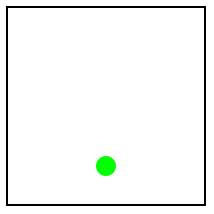
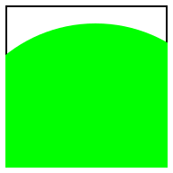

1 Programmieren mit Ausdrücken
Dieser Teil des Skripts basiert auf [HTDP/2e] Kapitel 1
1.1 Programmieren mit arithmetischen Ausdrücken
Jeder von Ihnen weiß, wie man Zahlen addiert, Kaffee kocht, oder einen Schrank eines schwedischen Möbelhauses zusammenbaut. Die Abfolge von Schritten, die sie hierzu durchführen, nennt man Algorithmus, und Sie wissen wie man einen solchen Algorithmus ausführt. In diesem Kurs werden wir die Rollen umdrehen: Sie werden den Algorithmus programmieren, und der Computer wird ihn ausführen. Eine formale Sprache, in der solche Algorithmen formuliert werden können, heißt Programmiersprache. Die Programmiersprache, die wir zunächst verwenden werden, heißt BSL. BSL steht für "Beginning Student Language". Zum Editieren und Ausführen der BSL Programme verwenden wir DrRacket. DrRacket kann man unter der URL http://racket-lang.org/ herunterladen. Bitte stellen Sie als Sprache "How To Design Programs - Anfänger" ein. Folgen Sie diesem Text am besten, indem Sie DrRacket parallel starten und immer mitprogrammieren.
Viele einfache Algorithmen sind in einer Programmiersprache bereits vorgegeben, z.B. solche zur Arithmetik mit Zahlen. Wir können "Aufgaben" stellen, indem wir DrRacket eine Frage stellen, auf die uns DrRacket dann im Ausgabefenster die Antwort gibt. So können wir zum Beispiel die Frage
(+ 1 1)
im Definitionsbereich (dem oberen Teil der DrRacket Oberfläche) stellen —
Die Art von Programmen bzw. Fragen wie (+ 1 1) nennen wir Ausdrücke. In Zukunft werden wir solche Frage/Antwort Interaktionen so darstellen, dass wir vor die Frage das > Zeichen setzen und in der nächsten Zeile die Antwort auf die Frage:
> (+ 1 1) 2
Operationen wie + nennen wir im Folgenden Funktionen. Die Operanden wie 1 nennen wir Argumente. Hier einige weitere Beispiele für Ausdrücke mit anderen Funktionen:
> (+ 2 2) 4
> (* 3 3) 9
> (- 4 2) 2
> (/ 6 2) 3
> (sqr 3) 9
> (expt 2 3) 8
> (sin 0) 0
Die Argumente dieser Funktionen sind jeweils Zahlen, und das Ergebnis ist auch wieder eine Zahl. Wir können auch direkt eine Zahl als Ausdruck verwenden. Zum Beispiel:
> 5 5
DrRacket zeigt als Ergebnis wieder genau dieselbe Zahl an. Eine Zahl, die direkt in einem Ausdruck verwendet wird, heißt auch Zahlenliteral.
Für manche Ausdrücke kann der Computer das mathematisch korrekte Ergebnis nicht berechnen. Stattdessen erhalten wir eine Annäherung an das mathematisch korrekte Ergebnis. Zum Beispiel:
> (sqrt 2) #i1.4142135623730951
Das i im letzten Ergebnis steht für "inexact", also ungenau. In BSL kann man an diesem i sehen, ob eine Zahl ein exaktes Ergebnis oder nur ein angenähertes Ergebnis ist.
Programme beinhalten Ausdrücke. Alle Programme, die wir bisher gesehen haben, sind Ausdrücke. Jeder von Ihnen kennt Ausdrücke aus der Mathematik. Zu diesem Zeitpunkt ist ein Ausdruck in unserer Programmiersprache entweder eine Zahl, oder etwas, das mit einer linken Klammer "(" startet und mit einer rechten Klammer ")" endet. Wir bezeichnen Zahlen als atomare Ausdrücke und Ausdrücke, die mit einer Klammer starten, als zusammengesetzte Ausdrücke. Später werden andere Arten von Ausdrücken hinzukommen.
Programieren Sie einen Ausdruck, der die Summe der Zahlen 3, 5, 19, und 32 berechnet.
Wie kann man mehr als zwei Zahlen addieren? Hierzu gibt es zwei Möglichkeiten:
Durch Schachtelung:
> (+ 2 (+ 3 4)) 9
oder durch Addition mit mehr als zwei Argumenten:
> (+ 2 3 4) 9
Immer wenn Sie in BSL eine Funktion wie + oder sqrt benutzen möchten, schreiben Sie eine öffnende Klammer, gefolgt vom Namen der Funktion, dann einem Leerzeichen (oder Zeilenumbruch) und dann die Argumente der Funktion, also in unserem Fall die Zahlen, auf die die Funktion angewandt werden soll.
Programmieren Sie einen Ausdruck, der den Durchschnitt der Zahlen 3, 5, 19 und 32 berechnet.
Am Beispiel der Schachtelung haben Sie gesehen, dass auch zusammengesetzte Ausdrücke als Argumente zugelassen sind. Diese Schachtelung kann beliebig tief sein:
> (+ (* 5 5) (+ (* 3 (/ 12 4)) 4)) 38
Das Ergebnis für einen solchen geschachtelten Ausdruck wird so berechnet, wie sie es auch auf einem Blatt Papier
machen würden: Wenn ein Argument ein zusammengesetzter Ausdruck ist, so wird zunächst das Ergebnis für diesen Ausdruck berechnet.
Dieser Unterausdruck ist möglicherweise selber wieder geschachtelt; in diesem Fall wird diese
Berechnungsvorschrift auch auf diese Unterausdrücke wieder angewendet (rekursive Anwendung).
Falls mehrere Argumente zusammengesetzte Ausdrücke sind, so werden diese in einer nicht festgelegten Reihenfolge ausgewertet.
Die Reihenfolge ist nicht festgelegt, weil das Ergebnis nicht von der Reihenfolge abhängt —
Zusammengefasst ist Programmieren zu diesem Zeitpunkt das Schreiben von arithmetischen Ausdrücken. Ein Programm auszuführen bedeutet, den Wert der darin enthaltenen Ausdrücke zu berechnen. Ein Drücken auf "Start" bewirkt die Ausführung des Programms im Definitionsbereich; die Ergebnisse der Ausführung werden im Interaktionsbereich angezeigt.
Noch ein praktischer Hinweis: Wenn Sie dieses Dokument mit einem Webbrowser lesen, sollten alle Funktionen, die in den Beispielausdrücken vorkommen, einen Hyperlink zu ihrer Dokumentation enthalten. Beispielsweise sollte der Additionsoperator im Ausdruck (+ 5 7) einen solchen Hyperlink enthalten. Unter diesen Links finden Sie auch eine Übersicht über die weiteren Operationen, die sie verwenden können.
1.2 Arithmetik mit nicht-numerischen Werten
Wenn wir nur Programme schreiben könnten, die Zahlen verarbeiten, wäre Programmieren genau so langweilig wie Mathematik ;-) Zum Glück gibt es viele andere Arten von Werten, mit denen wir ganz analog zu Zahlen rechnen können, zum Beispiel Text, Wahrheitswerte, Bilder usw.
Zu jedem dieser sogenannten Datentypen gibt es Konstruktoren, mit denen man Werte dieser Datentypen konstruieren kann, sowie Funktionen, die auf Werte dieses Datentyps angewendet werden können und die weitere Werte des Datentyps konstruieren. Konstruktoren für numerische Werte sind zum Beispiel 42 oder 5.3 (also die Zahlenliterale; Funktionen sind zum Beispiel + oder *.
Die Konstruktoren für Text (im folgenden auch String genannt) erkennt man an Anführungszeichen. So ist zum Beispiel
"Konzepte der Programmiersprachen"
ein Stringliteral. Eine Funktion auf diesem Datentyp ist string-append, zum Beispiel
> (string-append "Konzepte der " "Programmiersprachen") "Konzepte der Programmiersprachen"
Es gibt weitere Funktionen auf Strings: Um Teile aus einem String zu extrahieren, um die Reihenfolge der Buchstaben umzukehren, um in Groß- oder Kleinbuchstaben zu konvertieren usw. Zusammen bilden diese Funktionen die Arithmetik der Strings.
Die Namen aller dieser Funktionen muss man sich nicht merken; bei Bedarf können die zur Verfügung stehenden Funktionen für Zahlen, Strings und andere Datentypen in der DrRacket Hilfe nachgeschlagen werden unter: Hilfe -> How to Design Programs Languages -> Beginning Student -> Pre-defined Functions
Programmieren Sie einen Ausdruck, der den String "Der Durchschnitt ist ..." erzeugt. Statt der drei Punkte soll der Durchschnitt der Zahlen 3, 5, 19 und 32 stehen. Verwenden Sie den Ausdruck, der diesen Durchschnitt berechnet, als Unterausdruck.
Bisher haben wir nur Funktionen kennengelernt, bei denen alle Argumente und auch das Ergebnis zum selben Datentyp gehören müssen. Zum Beispiel arbeitet die Funktion + nur mit Zahlen, und die Funktion string-append arbeitet nur mit Strings. Es gibt aber auch Funktionen, die Werte eines Datentyps als Argument erwarten, aber Werte eines anderen Datentypes als Ergebnis liefern, zum Beispiel die Funktion string-length:
> (+ (string-length "Programmiersprachen") 5) 24
Das Ergebnis von (string-length "Programmiersprachen") ist die Zahl 19, die ganz normal als Argument für die Funktion + verwendet werden kann. Sie können also Funktionen, die zu unterschiedlichen Datentypen gehören, in einem Ausdruck zusammen verwenden. Dabei müssen Sie allerdings darauf achten, daß jede Funktion Argumente des richtigen Datentyps bekommt. Es gibt sogar Funktionen, die Argumente unterschiedlicher Datentypen erwarten, zum Beispiel
> (replicate 3 "hi") "hihihi"
Schließlich gibt es auch Funktionen, die Datentypen ineinander umwandeln, zum Beispiel
> (number->string 42) "42"
> (string->number "42") 42
Dieses Beispiel illustriert, dass 42 und "42", trotz ihres ähnlichen Aussehens, zwei sehr unterschiedliche Ausdrücke sind. Um diese zu vergleichen, nehmen wir noch zwei weitere Ausdrücke hinzu, nämlich (+ 21 21) und "(+ 21 21)".
Zahlen |
| Strings |
42 |
| "42" |
(+ 21 21) |
| "(+ 21 21)" |
Der erste Ausdruck, 42, ist ein Zahl; die Auswertung einer Zahl ergibt die Zahl selber. Wenn wir ganz präzise sein wollten, könnten wir noch unterscheiden zwischen dem Zahlenliteral 42 und dem mathematischen Objekt 42; ersteres ist nur eine Notation (Syntax) für letzteres. Wir werden jedoch die Bedeutung von Programmen rein syntaktisch definieren, daher ist diese Unterscheidung für uns nicht relevant. Der dritte Ausdruck, (+ 21 21), ist ein Ausdruck, der bei Auswertung ebenfalls den Wert 42 ergibt. Jedes Vorkommen des Ausdrucks 42 kann in einem Programm durch den Ausdruck (+ 21 21) ersetzt werden (und umgekehrt), ohne die Bedeutung des Programms zu verändern.
Der zweite Ausdruck, "42", ist hingegen ein String, also eine Sequenz von Zeichen, die zufällig, wenn man sie in Dezimalnotation interpretiert, dem Wert 42 entspricht. Dementsprechend ist es auch sinnlos, zu "42" etwas hinzuaddieren zu wollen:
> (+ "42" 1) +: expects a number, given "42"
Es gibt Programmiersprachen, die automatische Konvertierungen zwischen Zahlen und Strings, die Zahlen repräsentieren, unterstützen. Dies ändert nichts daran, dass Zahlen und Strings, die als Zahlen gelesen werden können, sehr unterschiedliche Dinge sind.
Der letzte Ausdruck, "(+ 21 21)", ist auch eine Sequenz von Zeichen, aber sie ist nicht äquivalent zu "42". Das eine kann also nicht durch das andere ersetzt werden ohne die Bedeutung des Programms zu verändern, wie dieses Beispiel illustriert:
> (string-length "42") 2
> (string-length "(+ 21 21)") 9
Nun zurück zu unserer Vorstellung der wichtigsten Datentypen. Ein weiterer wichtiger Datentyp sind Wahrheitswerte (Boolsche Werte). Die einzigen Konstruktoren hierfür sind die Literale #true und #false. Funktionen auf boolschen Werten sind zum Beispiel die aussagenlogischen Funktionen:
> (and #true #true) #true
> (and #true #false) #false
> (or #true #false) #true
> (or #false #false) #false
> (not #false) #true
Kennen Sie den? Frage an die schwangere Informatikerin: Wird es ein Junge oder ein Mädchen? Antwort: Ja!
> (> 10 9) #true
> (< -1 0) #true
> (= 42 9) #false
> (string=? "hello" "world") #false
Natürlich können Ausdrücke weiterhin beliebig verschachtelt werden, z.B. so:
Beachten Sie in diesem Beispiel wie die Einrückung des Textes hilft, zu verstehen, welcher Teilausdruck Argument welcher Funktion ist. Probieren Sie in DrRacket aus, wie die Funktionen "Einrücken" bzw. "Alles einrücken" im Menü "Racket" die Einrückung ihres Programms verändern.
> (and (or (= (string-length "hello world") (string->number "11")) (string=? "hello world" "good morning")) (>= (+ (string-length "hello world") 60) 80)) #false
Die Auswertung der boolschen Funktionen and und or funktioniert etwas anders als die "normaler" Funktionen. Während bei "normalen" Funktionen alle Argumente ausgewertet werden bevor die Funktion angewendet wird, wird bei and und or nur soweit ausgewertet, wie unbedingt nötig. Wir werden die genaue Semantik und die Gründe dafür später besprechen; an dieser Stelle geben wir nur einige Beispiele an, die den Unterschied illustrieren.
> (and #false 42) #false
> (or #true 42) #true
Der letzte Datentyp den wir heute einführen werden, sind Bilder. In BSL sind
Bilder "ganz normale" Werte, mit dazugehöriger Arithmetik, also Funktionen darauf.
Existierende Bilder können per Copy&Paste oder über das Menü "Einfügen -> Bild" direkt in
das Programm eingefügt werden. Wenn Sie dieses Dokument im Browser betrachten, können Sie
das Bild dieser Rakete  mit Copy&Paste in ihr Programm einfügen. Genau wie die Auswertung
einer Zahl die Zahl selber ergibt, ergibt die Auswertung des Bilds das Bild selber.
mit Copy&Paste in ihr Programm einfügen. Genau wie die Auswertung
einer Zahl die Zahl selber ergibt, ergibt die Auswertung des Bilds das Bild selber.

Achten Sie darauf, das Teachpack "image.ss" zu verwenden, das zu HtDP/2e gehört. Es steht im DrRacket-Teachpack-Dialog in der mittleren Spalte. Alternativ können Sie am Anfang ihrer Datei die Anweisung "(require 2htdp/image)" hinzufügen.
Wie auf anderen Datentypen sind auch auf Bildern eine Reihe von Funktionen verfügbar. Diese Funktionen müssen allerdings erst durch das Aktivieren eines "Teachpacks" zu BSL hinzugefügt werden. Aktivieren Sie in DrRacket das HtDP/2e Teachpack "image.ss", um selber mit den folgenden Beispielen zu experimentieren.
Beispielsweise kann die Fläche des Bildes durch diesen Ausdruck berechnet werden:
> (* (image-width  ) (image-height
) (image-height  ))
))
600
Statt existierende Bilder in das Programm einzufügen kann man auch neue Bilder konstruieren:
> (circle 10 "solid" "red") > (rectangle 30 20 "solid" "blue")
Programmieren Sie einen Ausdruck, der mehrere Kreise um denselben Mittelpunkt zeichnet.Programmieren Sie einen Ausdruck, der einen Kreis zeichnet, der durch eine schräge Linie geschnitten wird. Markieren Sie die Schnittpunkte durch kleine Kreise.
Die Arithmetik der Bilder umfasst nicht nur Funktionen um Bilder zu konstruieren, sondern auch um Bilder in verschiedener Weise zu kombinieren:
> (overlay (circle 5 "solid" "red") (rectangle 20 20 "solid" "blue"))
Benutzen Sie die Dokumentation von BSL (z.B. über die Links in der Browser-Version dieses Dokuments) wenn Sie wissen wollen welche weiteren Funktionen auf Bildern es gibt und welche Parameter diese erwarten. Zwei wichtige Funktionen die Sie noch kennen sollten sind empty-scene und place-image. Die erste erzeugt eine Szene, ein spezielles Rechteck in dem Bilder plaziert werden können. Die zweite Funktionen setzt ein Bild in eine Szene:
> (place-image (circle 5 "solid" "green") 50 80 (empty-scene 100 100)) 
1.3 Auftreten und Umgang mit Fehlern
Bei der Erstellung und Ausführung von Programmen können unterschiedliche Arten von Fehlern auftreten. Außerdem treten Fehler zu unterschiedlichen Zeitpunkten auf. Es ist wichtig, die Klassen und Ursachen dieser Fehler zu kennen.
Programmiersprachen unterscheiden sich darin, zu welchem Zeitpunkt Fehler gefunden werden. Die wichtigsten Zeitpunkte, die wir unterscheiden möchten, sind folgende: 1) Vor der Programmausführung (manchmal auch "statische Fehler" genannt), oder 2) Während der Programmausführung ("dynamische Fehler" oder "Laufzeitfehler"). Im Allgemeinen gilt: Je früher desto besser! - allerdings muss diese zusätzliche Sicherheit häufig mit anderen Restriktionen erkauft werden, zum Beispiel der, dass einige korrekte Programme nicht mehr ausgeführt werden können.
Eine wichtige Art von Fehlern sind Syntaxfehler. Ein Beispiel für ein Programm mit einem Syntaxfehler sind die Ausdrücke (+ 2 3( oder (+ 2 3 oder (+ 2 (+ 3 4).
Syntaxfehler werden vor der Programmausführung von DrRacket geprüft und gefunden; diese Prüfung kann auch mit der Schaltfläche "Syntaxprüfung" veranlasst werden.
Ein Syntaxfehler tritt auf, wenn ein BSL Programm nicht zur BSL Grammatik passt. Später werden wir diese Grammatik genau definieren; informell ist eine Grammatik eine Menge von Vorschriften über die Struktur korrekter Programme.
Ein BSL Programm ist eine Sequenz von Ausdrücken.
Ein Ausdruck ist eine Zahl, ein Bild, ein Boolscher Wert, ein String, oder ein Funktionsaufruf.
Ein Funktionsaufruf hat die Form (f a1 a2 ...) wobei f der name einer Funktion ist und die Argumente a1,a2,... Ausdrücke sind.
In BSL werden Syntaxfehler immer vor der Programmausführung erkannt. Auch einige andere Fehler, wie das Aufrufen einer Funktion, die nicht definiert ist, werden vor der Programmausführung erkannt, beispielsweise ein Aufruf (foo "asdf"). Dies ist jedoch kein Syntaxfehler (es ist leider etwas verwirrend dass diese Fehler dennoch durch Drücken des Knopfs "Check Syntax" gefunden werden).
Die folgenden Programme sind alle syntaktisch korrekt, allerdings lassen sich nicht alle diese Programme auswerten:
> (number->string "asdf") number->string: expects a number, given "asdf"
> (string-length "asdf" "fdsa") string-length: expects only 1 argument, but found 2
> (/ 1 0) /: division by zero
> (string->number "asdf") #false
Nicht jedes syntaktisch korrekte Programm hat in BSL eine Bedeutung. Bedeutung heißt in diesem Fall dass das Programm korrekt ausgeführt werden kann und einen Wert zurückliefert. Die Menge der BSL Programme, die eine Bedeutung haben, ist nur eine Teilmenge der syntaktisch korrekten BSL Programme.
Die Ausführung des Programms (number->string "asdf") ergibt einen Laufzeitfehler, also ein Fehler der auftritt während das Programm läuft (im Unterschied zu Syntaxfehlern, die vor der Programmausführung erkannt werden). Wenn in BSL ein Laufzeitfehler auftritt, wird die Programmausführung abgebrochen und eine Fehlermeldung ausgegeben.
Dieser Fehler ist ein Beispiel für einen Typfehler: Die Funktion erwartet, dass ein Argument einen bestimmten Typ hat, diesem Fall ’Zahl’, aber tatsächlich hat das Argument einen anderen Typ, in diesem Fall ’String’.
Ein anderer Fehler, der auftreten kann, ist der, dass die Anzahl der angegebenen Argumente nicht zu der Funktion passt (ein Aritätsfehler). Im Programm (string-length "asdf" "fdsa") tritt dieser Fehler auf.
Manchmal stimmt zwar der Datentyp des Arguments, aber trotzdem ’passt’ das Argument in irgendeiner Weise nicht. Im Beispiel (/ 1 0) ist es so, dass die Divisionsfunktion als Argumente Zahlen erwartet. Das zweite Argument ist eine Zahl, trotzdem resultiert die Ausführung in einer Fehlermeldung, denn die Division durch Null ist nicht definiert.
Recherchieren Sie, was das Theorem von Rice aussagt.
Nicht alle Laufzeitfehler führen zu einem Abbruch der Programmausführung. Beispielsweise ergibt die Ausführung des Programms (string->number "asdf") den Wert #false. Dieser Wert signalisiert, dass der übergebene String keine Zahl repräsentiert. In diesem Fall tritt also kein Laufzeitfehler auf, sondern die Ausführung wird fortgesetzt. Der Aufrufer von (string->number "asdf") hat dadurch die Möglichkeit, abzufragen, ob die Umwandlung erfolgreich war oder nicht, und je nachdem das Programm anders fortzusetzen. Das Programm ist also aus BSL-Sicht wohldefiniert. Die Funktion string->number hätte alternativ aber auch so definiert werden können, dass sie in dieser Situation einen Laufzeitfehler auslöst.
1.4 Kommentare
Ein Programm kann neben dem eigentlichen Programmtext auch Kommentare enthalten. Kommentare haben keinen Einfluss auf die Bedeutung eines Programms und dienen nur der besseren Lesbarkeit eines Programms. Insbesondere wenn Programme größer werden können Kommentare helfen das Programm schneller zu verstehen. Kommentare werden durch ein Semikolon eingeleitet; alles was in einer Zeile nach einem Semikolon steht ist ein Kommentar.
; Berechnet die Goldene Zahl (/ (+ 1 (sqrt 5)) 2)
Es kann auch manchmal hilfreich sein, ganze Programme "auszukommentieren". Programme, welche in Kommentaren enthalten sind werden von DrRacket ignoriert und nicht ausgewertet.
; (/ (+ 1 (sqrt 5)) 2) ; (+ 42
Im obigen Beispiel würde kein Ergebnis ausgegeben werden, da die Berechnungen in einem Kommentar stehen. Fehlerhafte Teile eines Programms (wie jenes in der zweiten Kommentarzeile), können auskommentiert werden, um den Rest des Programms in DrRacket ausführen zu können.
Wir werden später mehr dazu sagen, wo, wie und wie ausführlich Programme kommentiert werden sollten.
1.5 Bedeutung von BSL Ausdrücken
Fassen wir nochmal den jetzigen Stand zusammen: Programmieren ist das Aufschreiben arithmetischer Ausdrücke, wobei die Arithmetik Zahlen, Strings, Boolsche Werte und Bilder umfasst. Programme sind syntaktisch korrekt wenn Sie gemäß der Regeln aus dem vorherigen Abschnitt konstruiert wurden. Nur syntaktisch korrekte Programme (aber nicht alle) haben in BSL eine Bedeutung. Die Bedeutung eines Ausdrucks in BSL ist ein Wert, und dieser Wert wird durch folgende Auswertungsvorschriften ermittelt:
Zahlen, Strings, Bilder und Wahrheitswerte sind Werte. Wir benutzen im Rest dieser Vorschrift Varianten des Buchstaben v als Platzhalter für Ausdrücke die Werte sind und Varianten des Buchstaben e für beliebige Ausdrücke (Merkhilfe: Wert = value, Ausdruck = expression).
Ist der Ausdruck bereits ein Wert so ist seine Bedeutung dieser Wert.
- Hat der Ausdruck die Form (f e1 ... en), wobei f ein Funktionsname (der nicht and oder or ist) und e1,...,en Ausdrücke sind, so wird dieser Ausdruck wie folgt ausgewertet:
Falls e1,...,en bereits Werte v1,...,vn sind und f auf den Werten v1,...,vn definiert ist, so ist der Wert des Ausdrucks die Anwendung von f auf v1,...,vn
Falls e1,...,en bereits Werte v1,...,vn sind aber f ist nicht auf den Werten v1,...,vn definiert, dann wird die Auswertung mit einer passenden Fehlermeldung abgebrochen.
Falls mindestens eines der Argumente noch kein Wert ist, so werden durch Anwendung der gleichen Auswertungsvorschriften die Werte aller Argumente bestimmt, so dass dann die vorherige Auswertungsregel anwendbar ist.
Falls eines der ei den Wert #false hat und alle Argumente links davon den Wert #true, so ist der Wert des gesamten Ausdrucks #false.
Falls alle ei den Wert #true haben, so ist der Wert des gesamten Ausdrucks #true.
Falls eines der ei ein Wert ist der weder #false noch #true ist und alle Argumente links davon den Wert #true, dann wird die Auswertung mit einer Fehlermeldung abgebrochen.
Falls ei das am weitesten links stehende Argument ist, welches noch kein Wert ist, so wird durch Anwendung der gleichen Auswertungsvorschriten der Wert dieses Arguments bestimmt und dann mit den gleichen Vorschriften die Auswertung fortgesetzt.
Hat der Ausdruck die Form (or e1 ... en), so wird analog zur Auswertung von and verfahren.
Diese Vorschriften können wir als Anleitung zur schrittweisen Reduktion von Programmen auffassen. Wir schreiben e → e’ um zu sagen, dass e in einem Schritt zu e’ reduziert werden kann. Werte können nicht reduziert werden. Die Reduktion ist wie folgt definiert:
Experimentieren Sie in DrRacket mit dem "Stepper" Knopf: Geben Sie einen komplexen Ausdruck in den Definitionsbereich ein, drücken Sie auf "Stepper" und dann auf die "Schritt nach rechts" Taste und beobachten Sie was passiert.
Falls der Ausdruck die Form (f v1 ... vn) hat (und f nicht and oder or ist) und die Anwendung von f auf v1,...,vn den Wert v ergibt, dann (f v1 ... vn) → v.
(and #false ...) → #false und (and #true ... #true) → #true. Analog or.
Falls ein Audruck e1 einen Unterausdruck e2 in einer Auswertungsposition enthält, der reduziert werden kann, also e2 → e2’, dann gilt e1 → e1’, wobei e1’ aus e1 entsteht indem e2 durch e2’ ersetzt wird.
Die letzte Regel nennen wir die Kongruenzregel. In dem Teil der Sprache, den Sie bereits kennengelernt haben, sind alle Positionen von Unterausdrücken Auswertungspositionen - außer bei den boolschen Funktionen and und or; bei diesen ist nur der am weitesten links stehende Unterausdruck, der noch kein Wert ist, in Auswertungsposition. Für Funktionsaufrufe (ungleich and und or) gilt in diesem Fall folgender Spezialfall der Kongruenzregel: Falls ei → ei’, dann (f e1 ... en) → (f e1 ... ei-1 ei’ ei+1 ...).
Wir benutzen folgende Konventionen:
e1 → e2 → e3 ist eine Kurzschreibweise für e1 → e2 und e2 → e3
Wenn wir schreiben e →* e’ so bedeutet dies dass es ein n ≥ 0 und e1, ...,en gibt so dass e → e1 → ... → en → e’ gilt. Insbesondere gilt e →* e . Man sagt, →* ist der reflexive und transitive Abschluss von → .
Beispiele:
(+ 1 1) → 2.
(or #true (and #true #true)) → #true, aber nicht (or #true (and #true #true)) → (or #true #true).
(+ (* 2 3) (* 4 5)) →* 26 aber nicht (+ (* 2 3) (* 4 5)) → 26.
(overlay (circle 5 "solid" "red") (rectangle 20 20 "solid" "blue")) → (overlay (rectangle 20 20 "solid" "blue")) → (overlay  ) →
 .
.
Im Allgemeinen kann ein Ausdruck mehrere reduzierbare Unterausdrücke haben, also die Kongruenzregeln an mehreren Stellen gleichzeitig einsetzbar sein. In den Beispielen oben haben wir zum Beispiel (+ (* 2 3) (* 4 5)) → (+ (* 2 3) 20) aber auch (+ (* 2 3) (* 4 5)) → (+ 6 (* 4 5)). Es ist jedoch nicht schwer zu sehen, dass immer wenn wir die Situation e1 → e2 und e1 → e3 haben, dann gibt es ein e4 so dass gilt e2 →* e4 und e3 →* e4 . Diese Eigenschaft nennt man Konfluenz. Reduktionen die auseinanderlaufen können also immer wieder zusammengeführt werden; der Wert den man am Ende erhält ist auf jeden Fall eindeutig.
Auf Basis dieser Reduktionsregeln können wir nun definieren, unter welchen Umständen zwei Programme äquivalent sind: Zwei Ausdrücke e1 und e2 sind äquivalent, geschrieben e1 ≡ e2 , falls es einen Ausdruck e gibt so dass e1 →* e und e2 →* e .
Beispiele:
Die Rechtfertigung für diese Definition liegt in folgender wichtiger Eigenschaft begründet: Wir können innerhalb eines großen Programms Teilausdrücke beliebig durch äquivalente Teilausdrücke ersetzen, ohne die Bedeutung des Gesamtprogramms zu verändern. Etwas formaler können wir das so ausdrücken:
Sei e1 ein Unterausdruck eines größeren Ausdrucks e2 und e1 ≡ e3 . Ferner sei e2’ eine Kopie von e2 in dem Vorkommen von e1 durch e3 ersetzt wurden. Dann gilt: e2 ≡ e2’.
Diese Eigenschaft folgt direkt aus der Kongruenzregel und der Definition von ≡ . Dieser Äquivalenzbegriff ist identisch mit dem, den Sie aus der Schulmathematik kennen, wenn Sie Gleichungen umformen, zum Beispiel wenn wir a + a - b umformen zu 2a - b weil wir wissen dass a + a = 2a.
Die Benutzung von ≡ um zu zeigen dass Programme die gleiche Bedeutung haben nennt man auch equational reasoning.